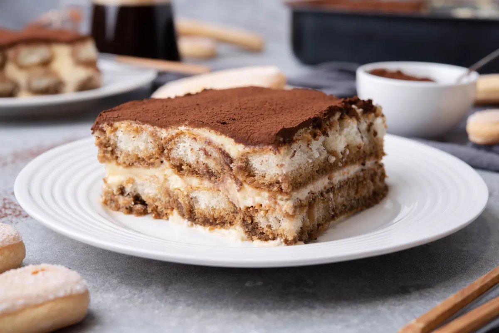

Tiramisù :O

Recipe
Ingredients
- 350 ml (1.48 cups) strong coffee espresso
- 4 (4) raw eggs
- 100 gr (0.5 cups) granulated sugar
- 500 gr (1.1 lbs) mascarpone cream cheese
- 300 gr (0.66 lbs) ladyfingers cookies
- 2 tablespoons (2 tablespoons) Marsala wine or dark Rum optional
- 30 gr (6 tbsp) cocoa powder
Directions
- To begin, take out the mascarpone cheese and the raw eggs from the fridge and leave them at room temperature for about 10 minutes (use a mascarpone mixture in place of whipped cream or heavy cream for a more authentic texture flavor).
- In the meantime, prepare the espresso coffee. Once ready, pour into a shallow bowl or into a bowl large enough to be able to lay a ladyfinger cookie fully. Optional: Add the marsala or rum and mix.
- If you make the recipe for children or you don't want to use alchol, don't use it. Your tiramisù will be equally delicious!
- Then, using two medium-large mixing bowls, separate the egg whites from the raw egg yolks. In the mixing bowl with the egg yolks, combine the yolks and sugar and whip the yolks with a kitchen mixer or an electric hand mixer until the mixture becomes creamy.
- Add the mascarpone cheese to the egg yolk mixture and with the help of a spatula mix gently until all the ingredients have been incorporated.
- In the second mixing bowl with the egg whites, whip the egg to form stiff peaks using an electric hand mixer or a stand mixer. Then, with a spatula, take a bit of the stiff peaks of the egg white mixture and fold slowly into the yolk mixture. Gently bring the egg mixture up and turn it over back into the bowl.
- Repeat this folding action turning the bowl a bit as you go until the egg white mixture is fully incorporated and the resulting mixture is light and airy.
- Cover the bottom of your baking dish with a layer of the cream mixture.
- Now is the time to quickly dip a couple of lady fingers in the bowl with the coffee. Dip both sides of the cookie. This action should be quick enough to avoid soaking the cookies too much. If it’s your first time, start with just one lady finger first before proceeding with the others to get a sense of the timing.
- Lay the coffee-soaked lady fingers on top of the first layer of the mixture in the baking pan. Repeat until the cookies cover the mixture entirely. Do not overlap the cookies.
- Spread another layer of the mixture on top of the cookies.
- Lay another layer of coffee-dipped lady fingers and cover the cookies with another layer of the mixture. Level the mixture with the spatula.
- Place the tiramisu in the fridge for at least 3 hours.
- Before serving, dust with cocoa powder. To do this, use a fine strainer sprinkle the cocoa powder on top of the tiramisu cake and serve.